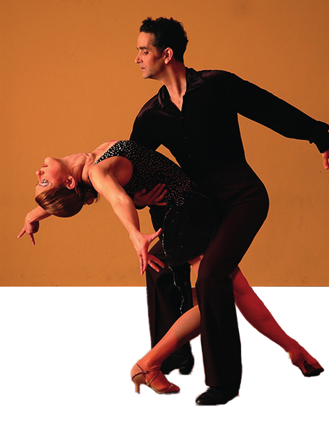

La vena musical
En las culturas latinas, la fusión entre el estilo clásico y los ritmos populares como la salsa o el reggaetón no se da por una simple ocurrencia comercial, sino por una profunda compatibilidad rítmica y estructural originada en el sincretismo cultural de la región.
